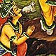
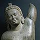
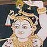
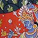
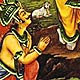
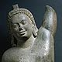
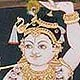
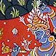

Govardhana-puja
From Krishna Book, Chapters 24–27, copyright Bhaktivedanta Book Trust
Return to Govardhana-puja main page
CHAPTER TWENTY–FOUR
Worshiping Govardhana Hill
While engaged with the brahmanas who were too much involved in the performance of Vedic sacrifices, Krsna and Balarama also saw that the cowherd men were preparing a similar sacrifice in order to pacify Indra, the King of heaven, who is responsible for supplying water. As stated in the Caitanya-caritamrta, a devotee of Krsna has strong and firm faith in the understanding that if he is simply engaged in Krsna consciousness and Krsna’s transcendental loving service, then he is freed from all other obligations. A pure devotee of Lord Krsna doesn’t have to perform any of the ritualistic functions enjoined in the Vedas; nor is he required to worship any demigods. Being a devotee of Lord Krsna, one is understood to have performed all kinds of Vedic rituals and all kinds of worship to the demigods. One does not develop devotional service for Krsna by performing the Vedic ritualistic ceremonies or worshiping the demigods, but it should be understood that one who is engaged fully in the service of the Lord has already fulfilled all Vedic injunctions.
In order to stop all such activities by His devotees, Krsna wanted to firmly establish exclusive devotional service during His presence in Vrndavana. Because He is the omniscient Personality of Godhead, Krsna knew that the cowherd men were preparing for the Indra sacrifice, but as a matter of etiquette He began to inquire with great honor and submission from elder personalities like Maharaja Nanda.
Krsna asked His father, “My dear father, what is this arrangement going on for a great sacrifice? What is the result of such a sacrifice, and for whom is it meant? How is it performed? Will you kindly let Me know? I am very eager to know this procedure, so please explain to Me the purpose of this sacrifice.” Upon this inquiry, His father, Nanda Maharaja, remained silent, thinking that his young boy would not be able to understand the intricacies of performing the yajna. Krsna, however, persisted: “My dear father, for those who are liberal and saintly, there is no secrecy. They do not think anyone to be a friend, an enemy or a neutral party, because they are always open to everyone. And even for those who are not so liberal, nothing should be kept secret from the family members and friends, although secrecy may be maintained for persons who are inimical. Therefore you cannot keep any secrets from Me. All persons are engaged in fruitive activities. Some know what these activities are, and they know the result, and some execute activities without knowing the purpose or the result. A person who acts with full knowledge gets the full result; one who acts without knowledge does not get such a perfect result. Therefore, please let Me know the purpose of the sacrifice you are going to perform. Is it according to Vedic injunction? Or is it simply a popular ceremony? Kindly let Me know in detail about the sacrifice.”
On hearing this inquiry from Krsna, Maharaja Nanda replied, “My dear boy, this ceremonial performance is more or less traditional. Because rainfall is due to the mercy of King Indra and the clouds are his representatives, and because water is so important for our living, we must show some gratitude to the controller of this rainfall, Maharaja Indra. We are arranging, therefore, to pacify King Indra, because he has very kindly sent us clouds to pour down a sufficient quantity of rain for successful agricultural activities. Water is very important: without rainfall we cannot farm or produce grain, and without grain we cannot live. Therefore rain is necessary for successful religious ceremonies, economic development and, ultimately, liberation. So we should not give up this traditional ceremonial function; if one gives it up, being influenced by lust, greed or fear, then it does not look very good for him.”
After hearing this, Krsna, the Supreme Personality of Godhead, in the presence of His father and all the elder cowherd men of Vrndavana, spoke in such a way as to make the heavenly king, Indra, very angry. He suggested that they forgo the sacrifice. His reasons for discouraging the sacrifice performed to please Indra were twofold. First, as stated in the Bhagavad-gita, there is no need to worship the demigods for any material advancement; all results derived from worshiping the demigods are simply temporary, and only those who are less intelligent are interested in temporary results. Second, whatever temporary result one derives from worshiping the demigods is actually granted by the permission of the Supreme Personality of Godhead. It is clearly stated in the Bhagavad-gita: mayaiva vihitan hi tan. Whatever benefit is supposed to be derived from the demigods is actually bestowed by the Supreme Personality of Godhead. Without the permission of the Supreme Personality of Godhead, one cannot bestow any benefit upon others. But sometimes the demigods become puffed up by the influence of material nature; thinking themselves all in all, they forget the supremacy of the Personality of Godhead. In SrImad-Bhagavatam it is clearly stated that in this instance Krsna wanted to make King Indra angry. Krsna’s advent was especially meant for the annihilation of the demons and protection of the devotees. King Indra was certainly a devotee, not a demon, but because he was puffed up, Krsna wanted to teach him a lesson. He first made Indra angry by stopping the Indra-puja, which had been arranged by the cowherd men in Vrndavana.
With this purpose in mind, Krsna began to talk as if He were an atheist supporting the philosophy of Karma-mImamsa. Advocates of this philosophy do not accept the supreme authority of the Personality of Godhead. They put forward the argument that if anyone works nicely, the result is sure to come. Their opinion is that even if there is a God who gives man the result of his fruitive activities, there is no need to worship Him because unless man works He cannot bestow any good result. They say that instead of worshiping a demigod or God, people should give attention to their own duties, and thus the good result will surely come. Lord Krsna began to speak to His father according to these principles of the Karma-mImamsa philosophy. “My dear father,” He said, “I don’t think you need to worship any demigod for the successful performance of your agricultural activities. Every living being is born according to his past karma and leaves this life simply taking the result of his present karma. Everyone is born in different types or species of life according to his past activities, and he gets his next birth according to the activities of this life. Different grades of material happiness and distress, comforts and disadvantages of life, are different results of different kinds of activities, from either the past or present life.”
Maharaja Nanda and other elder members argued that without satisfying the predominating god one cannot derive any good result simply by material activities. This is actually the fact. For example, it is sometimes found that in spite of first-class medical help and treatment by a first-class physician, a diseased person dies. It is concluded, therefore, that first-class medical treatment or the attempts of a first-class physician are not in themselves the cause for curing a patient; there must be the hand of the Supreme Personality of Godhead. Similarly, a father’s and mother’s taking care of their children is not the cause of the children’s comfort. Sometimes it is found that in spite of all care by the parents, the children go bad or succumb to death. Therefore material causes are not sufficient for results. There must be the sanction of the Supreme Personality of Godhead. Nanda Maharaja therefore advocated that in order to get good results for agricultural activities, they must satisfy Indra, the superintending deity of the rain supply. Lord Krsna nullified this argument, saying that the demigods give results only to persons who have executed their prescribed duties. The demigods cannot give any good results to the person who has not executed the prescribed duties; therefore demigods are dependent on the execution of duties and are not absolute in awarding good results to anyone. So why should one care about them?
“My dear father,” Lord Krsna said, “there is no need to worship the demigod Indra. Everyone has to achieve the result of his own work. We can actually see that one becomes busy according to the natural tendency of his work; and according to that natural tendency, all living entities—whether human beings or demigods—achieve their respective results. All living entities achieve higher or lower bodies and create enemies, friends or neutral parties only because of their different kinds of work. One should be careful to discharge duties according to his natural instinct and not divert attention to the worship of various demigods. The demigods will be satisfied by proper execution of all duties, so there is no need to worship them. Let us, rather, perform our prescribed duties very nicely. Actually, one cannot be happy without executing his proper prescribed duty. One who does not, therefore, properly discharge his prescribed duties is compared to an unchaste wife. The proper prescribed duty of the brahmanas is the study of the Vedas; the proper duty of the royal order, the ksatriyas, is engagement in protecting the citizens; the proper duty of the vaisya community is agriculture, trade and protection of the cows; and the proper duty of the sudras is service to the higher classes, namely the brahmanas, ksatriyas and vaisyas. We belong to the vaisya community, and our proper duty is to farm, to trade with the agricultural produce, to protect cows or to take to banking.”
Krsna identified Himself with the vaisya community because Nanda Maharaja was protecting many cows and Krsna was taking care of them. He enumerated four kinds of business engagements for the vaisya community, namely agriculture, trade, protection of cows and banking. Although the vaisyas can take to any of these occupations, the men of Vrndavana were engaged primarily in the protection of cows.
Krsna further explained to His father, “This cosmic manifestation is going on under the influence of three modes of material nature—goodness, passion and ignorance. These three modes are the causes of creation, maintenance and destruction. The cloud is caused by the action of the mode of passion; therefore it is the mode of passion which causes the rainfall. And after the rainfall, the living entities derive the result—success in agricultural work. What, then, has Indra to do with this affair? Even if you do not please Indra, what can he do? We do not derive any special benefit from Indra. Even if he is there, he pours water on the ocean also, where there is no need of water. So he is pouring water on the ocean or on the land; it does not depend on our worshiping him. As far as we are concerned, we do not need to go to another city or village or foreign country. There are palatial buildings in the cities, but we are satisfied living in this forest of Vrndavana. Our specific relationship is with Govardhana Hill and Vrndavana forest and nothing more. I therefore request you, My dear father, to begin a sacrifice which will satisfy the local brahmanas and Govardhana Hill, and let us have nothing to do with Indra.”
After hearing this statement by Krsna, Nanda Maharaja replied, “My dear boy, since You are asking, I shall arrange for a separate sacrifice for the local brahmanas and Govardhana Hill. But for the present let me execute this sacrifice known as Indra-yajna.”
But Krsna replied, “My dear father, don’t delay. The sacrifice you propose for Govardhana and the local brahmanas will take much time. Better take the arrangement and paraphernalia you have already made for the Indra-yajna and immediately engage them to satisfy Govardhana Hill and the local brahmanas.”
Maharaja Nanda finally relented. The cowherd men then inquired from Krsna how He wanted the yajna performed, and Krsna gave them the following directions. “Prepare very nice foods of all descriptions from the grain and ghee collected for the yajna. Prepare rice, dhal, then halava, pakora, purI and all kinds of milk preparations, such as sweet rice, rabrI, sweetballs, sandesa, rasagulla and laddu, and invite the learned brahmanas who can chant the Vedic hymns and offer oblations to the fire. The brahmanas should be given all kinds of grain in charity. Then decorate all the cows and feed them well. After performing this, give money in charity to the brahmanas. As far as the lower animals are concerned, such as the dogs, and the lower grades of people, such as the candalas, or the fifth class of men, who are considered untouchable, they also may be given sumptuous prasadam. After nice grasses have been given to the cows, the sacrifice known as Govardhana-puja may immediately begin. This sacrifice will very much satisfy Me.”
In this statement, Lord Krsna practically described the whole economy of the vaisya community. In all communities in human society—including the brahmanas, ksatriyas, vaisyas, sudras, candalas, etc.—and in the animal kingdom—including the cows, dogs, goats, etc.—everyone has his part to play. Each is to work in cooperation for the total benefit of all society, which includes not only animate objects but also inanimate objects like hills and land. The vaisya community is specifically responsible for the economic improvement of the society by producing grain, by giving protection to the cows, by transporting food when needed, and by banking and finance.
From this statement we learn also that although the cats and dogs, which have now become so important, are not to be neglected, cow protection is actually more important than protection of cats and dogs. Another hint we get from this statement is that the candalas, or the untouchables, are also not to be neglected by the higher classes and should be given necessary protection. Everyone is important, but some are directly responsible for the advancement of human society and some are only indirectly responsible. However, when Krsna consciousness is there, then everyone’s total benefit is taken care of.
The sacrifice known as Govardhana-puja is observed in the Krsna consciousness movement. Lord Caitanya has recommended that since Krsna is worshipable, so His land—Vrndavana and Govardhana Hill—is also worshipable. To confirm this statement, Lord Krsna said that Govardhana-puja is as good as worship of Him. From that day, Govardhana-puja has been going on and is known as Annakuta. In all the temples of Vrndavana or outside of Vrndavana, huge quantities of food are prepared in this ceremony and are very sumptuously distributed to the general population. Sometimes the food is thrown to the crowds, and they enjoy collecting it off the ground. From this we can understand that prasadam offered to Krsna never becomes polluted or contaminated, even if it is thrown on the ground. The people therefore collect and eat it with great satisfaction.
The Supreme Personality of Godhead, Krsna, therefore advised the cowherd men to stop the Indra-yajna and begin the Govardhana-puja in order to chastise Indra, who was very much puffed up at being the supreme controller of the heavenly planets. The honest and simple cowherd men, headed by Nanda Maharaja, accepted Krsna’s proposal and executed in detail everything He advised. They performed Govardhana worship and circumambulation of the hill. (Following the inauguration of Govardhana-puja, people in Vrndavana still dress nicely and assemble near Govardhana Hill to offer worship and circumambulate the hill, leading their cows all around.) According to the instruction of Lord Krsna, Nanda Maharaja and the cowherd men called in learned brahmanas and began to worship Govardhana Hill by chanting Vedic hymns and offering prasadam. The inhabitants of Vrndavana assembled together, decorated their cows and gave them grass. Keeping the cows in front, they began to circumambulate Govardhana Hill. The gopIs dressed themselves very luxuriantly and sat in bull-driven carts, chanting the glories of Krsna’s pastimes. The brahmanas, assembled there to act as priests for Govardhana-puja, offered their blessings to the cowherd men and their wives, the gopIs.
When everything was complete, Krsna assumed a great transcendental form and declared to the inhabitants of Vrndavana that He was Himself Govardhana Hill in order to convince the devotees that Govardhana Hill and Krsna Himself are identical. Then Krsna began to eat all the food offered there. The identity of Krsna and Govardhana Hill is still honored, and great devotees take rocks from Govardhana Hill and worship them exactly as they worship the Deity of Krsna in the temples. The followers of the Krsna consciousness movement may therefore collect small rocks or pebbles from Govardhana Hill and worship them at home, because this worship is as good as Deity worship. The form of Krsna who began to eat the offerings was separately constituted, and Krsna Himself, along with the other inhabitants of Vrndavana, offered obeisances to the Deity as well as Govardhana Hill. In offering obeisances to the huge form of Krsna and Govardhana Hill, Krsna declared, “Just see how Govardhana Hill has assumed this huge form and is favoring us by accepting all the offerings!” Krsna also declared at that meeting, “One who neglects the worship of Govardhana-puja, as I am personally conducting it, will not be happy. There are many snakes on Govardhana Hill, and persons neglecting the prescribed duty of Govardhana-puja will be bitten by these snakes and killed. In order to assure the good fortune of the cows and themselves, all people of Vrndavana near Govardhana must worship the hill, as prescribed by Me.”
Thus performing the Govardhana-puja sacrifice, all the inhabitants of Vrndavana followed the instructions of Krsna, the son of Vasudeva, and afterwards they returned to their respective homes.
Thus ends the Bhaktivedanta purport of the Twenty-fourth Chapter of Krsna, “Worshiping Govardhana Hill.”
Return to Govardhana-puja main page
CHAPTER TWENTY–FIVE
Devastating Rainfall in Vrndavana
When Indra understood that the sacrifice which was to be offered by the cowherd men in Vrndavana had been stopped by Krsna, he became angry, and he vented his anger upon the inhabitants of Vrndavana, who were headed by Nanda Maharaja, although Indra knew perfectly well that Krsna was personally protecting them. As the director of different kinds of clouds, Indra called for the Samvartaka. This cloud is invited when there is a need to devastate the whole cosmic manifestation. The Samvartaka was ordered by Indra to go over Vrndavana and inundate the whole area with an extensive flood. Demonically, Indra thought himself to be the all-powerful supreme personality. When demons become very powerful, they defy the supreme controller, the Personality of Godhead. Indra, though not a demon, was puffed up by his material position, and he wanted to challenge the supreme controller. He thought himself, at least for the time being, as powerful as Krsna. Indra said, “Just see the impudence of the inhabitants of Vrndavana! They are simply inhabitants of the forest, but being infatuated with their friend Krsna, who is nothing but an ordinary human being, they have dared to defy the demigods.”
Krsna has declared in the Bhagavad-gita that the worshipers of the demigods are not very intelligent. He has also declared that one has to give up all kinds of worship and simply concentrate on Krsna consciousness. Krsna’s invoking the anger of Indra and later on chastising him is a clear indication to His devotees that those who are engaged in Krsna consciousness have no need to worship any demigod, even if it is found that the demigod has become angry. Krsna gives His devotees all protection, and they should completely depend on His mercy.
Indra cursed the action of the inhabitants of Vrndavana and said, “By defying the authority of the demigods, the inhabitants of Vrndavana will suffer in material existence. Having neglected the sacrifice to the demigods, they cannot cross over the impediments of the ocean of material existence.” Indra further declared, “These cowherd men in Vrndavana have neglected my authority on the advice of this talkative boy who is known as Krsna. He is nothing but a child, and by believing this child, they have enraged me.” Thus he ordered the Samvartaka cloud to go and destroy the prosperity of Vrndavana. “The men of Vrndavana,” said Indra, “have become too puffed up over their material opulence and are overconfident due to the presence of their tiny friend, Krsna. He is simply talkative, childish and unaware of the complete cosmic situation, although He is thinking Himself very advanced in knowledge. Because they have taken Krsna so seriously, they must be punished. They should be destroyed with their cows.” In this way Indra ordered the Samvartaka cloud to go to Vrndavana and inundate the place.
It is indicated here that in the villages or outside the towns, the inhabitants must depend on the cows for their prosperity. When the cows are destroyed, the people are destitute of all kinds of opulences. When King Indra ordered the Samvartaka and companion clouds to go to Vrndavana, the clouds were afraid of doing this mischief. But King Indra assured them, “You go ahead, and I will also go, riding on my elephant, accompanied by great storms. And I shall apply all my strength to punishing the inhabitants of Vrndavana.”
Ordered by King Indra, all the dangerous clouds appeared above Vrndavana and began to pour water incessantly, with all their strength and power. There was constant lightning and thunder, blowing of severe wind, and incessant falling of rain. The rain seemed to fall like piercing sharp arrows. By pouring water as thick as pillars, without cessation, the clouds gradually filled all the lands in Vrndavana with water, and there was no visible distinction between higher and lower land. The situation was very dangerous, especially for the animals. The rainfall was accompanied by great winds, and every living creature in Vrndavana began to tremble from the severe cold. Unable to find any other source of deliverance, they all approached Govinda to take shelter at His lotus feet. The cows especially, being much aggrieved from the heavy rain, bowed down their heads, and taking their calves underneath their bodies, they approached the Supreme Personality of Godhead to take shelter of His lotus feet. At that time all the inhabitants of Vrndavana began to pray to Lord Krsna. “Dear Krsna,” they prayed, “You are all-powerful, and You are very affectionate to Your devotees. Now please protect us, who have been much harassed by angry Indra.”
Upon hearing their prayer, Krsna could understand that Indra, being bereft of his sacrificial honor, was pouring down rain that was accompanied by heavy pieces of ice and strong winds, although all this was out of season. Krsna understood that this was a deliberate exhibition of anger by Indra. He therefore concluded, “This demigod who thinks himself supreme has shown his great power, but I shall answer him according to My position, and I shall teach him that he is not autonomous in managing universal affairs. I am the Supreme Lord over all, and I shall thus take away his false prestige, which has risen from his power. The demigods are My devotees, and therefore it is not possible for them to forget My supremacy, but somehow or other he has become puffed up with material power and thus is now maddened. I shall act in such a way as to relieve him of this false prestige. I shall give protection to My pure devotees in Vrndavana, who are at present completely dependent on My mercy and whom I have taken completely under My protection. I must save them by My mystic power.”
Thinking in this way, Lord Krsna immediately picked up Govardhana Hill with one hand, exactly as a child picks up a mushroom from the ground. Thus He exhibited His transcendental pastime of lifting Govardhana Hill. Lord Krsna then addressed His devotees, “My dear brothers, My dear father, My dear inhabitants of Vrndavana, you can now safely enter under the umbrella of Govardhana Hill, which I have just lifted. Do not be afraid of the hill and think that it will fall from My hand. You have been too much afflicted from the heavy rain and strong wind; therefore I have lifted this hill, which will protect you exactly like a huge umbrella. I think this is a proper arrangement to relieve you of your immediate distress. Be happy along with your animals underneath this great umbrella.” Being assured by Lord Krsna, all the inhabitants of Vrndavana entered beneath the great hill along with their property and animals, and they all appeared to be safe.
The inhabitants of Vrndavana and their animals remained there for one week without being disturbed by hunger, thirst or any other discomforts. They were simply astonished to see how Krsna was holding up the mountain with the little finger of His left hand. Seeing the extraordinary mystic power of Krsna, Indra, the King of heaven, was thunderstruck and baffled in his determination. He immediately called for all the clouds and asked them to desist. When the sky became completely cleared of all clouds and there was sunrise again, the strong wind stopped. At that time Krsna, the Supreme Personality of Godhead, known now as the lifter of Govardhana Hill, said, “My dear cowherd men, now you can leave and take your wives, children, cows and valuables, because everything is ended. The inundation has gone down, along with the swelling waters of the river.”
All the men loaded their valuables on carts and slowly left with their cows and other paraphernalia. After they had cleared out everything, Lord Krsna very slowly replaced Govardhana Hill in exactly the same position it had been before. When everything was done, all the inhabitants of Vrndavana approached Krsna with feelings of love and embraced Him with great ecstasy. The gopIs, being naturally very affectionate to Krsna, began to offer Him yogurt mixed with their tears, and they poured incessant blessings upon Him. Mother Yasoda, mother RohinI, Nanda and Balarama, who is the strongest of the strong, embraced Krsna one after another and, from spontaneous feelings of affection, blessed Him over and over again. In the heavens, different demigods from different planetary systems, such as Siddhaloka, Gandharvaloka and Caranaloka, also began to show their complete satisfaction. They poured showers of flowers on the surface of the earth and sounded different conchshells. There was beating of drums, and being inspired by godly feelings, residents of Gandharvaloka began to play on their tambouras to please the Lord. After this incident, the Supreme Personality of Godhead, surrounded by His dear friends and the animals, returned to His home. As usual, the gopIs began to chant the glorious pastimes of Lord Krsna with great feeling, for they were chanting from the heart.
Thus ends the Bhaktivedanta purport of the Twenty-fifth Chapter of Krsna, “Devastating Rainfall in Vrndavana.”
Return to Govardhana-puja main page
CHAPTER TWENTY–SIX
Wonderful Krsna
Without understanding the intricacies of Krsna, the Supreme Personality of Godhead, and without knowing His uncommon spiritual opulences, the innocent cowherd boys and men of Vrndavana began to discuss the wonderful activities of Krsna, which surpass the activities of all men.
One of them said, “My dear friends, considering His wonderful activities, how is it possible that such an uncommon boy would come and live with us in Vrndavana? It is really not possible. Just imagine! He is now only seven years old! How is it possible for Him to lift Govardhana Hill in one hand and hold it up just as the king of elephants holds a lotus flower? To lift a lotus flower is a most insignificant thing for an elephant, and similarly Krsna lifted Govardhana Hill without exertion. When He was simply a small baby and could not even see properly, He killed a great demon, Putana. While sucking her breast, He also sucked out her life air. Krsna killed the Putana demon exactly as eternal time kills a living creature in due course. When He was only three months old, He was sleeping underneath a hand-driven cart. Being hungry for His mother’s breast, He began to cry and throw His legs upwards. And from the kicking of His small feet the cart immediately broke apart and fell to pieces. When He was only one year old, He was carried away by the Trnavarta demon disguised as a whirlwind, and although He was taken very high in the sky, He simply hung on the neck of the demon and forced him to fall from the sky and immediately die. Once His mother, being disturbed by His stealing butter, tied Him to a wooden mortar, and the child pulled it toward a pair of trees known as yamala-arjuna and caused them to fall. Once, when He was engaged in tending the calves in the forest along with His elder brother, Balarama, a demon named Bakasura appeared, and Krsna at once bifurcated the demon’s beak. When the demon known as Vatsasura entered among the calves tended by Krsna with a desire to kill Him, He immediately detected the demon, killed him and threw him into a tree. When Krsna, along with His brother, Balarama, entered the Talavana forest, the demon known as Dhenukasura, in the shape of an ass, attacked Them and was immediately killed by Balarama, who caught his hind legs and threw him into a palm tree. Although the Dhenukasura demon was assisted by his cohorts, also in the shape of asses, all were killed, and the Talavana forest was then open for the use of the animals and inhabitants of Vrndavana. When Pralambasura entered amongst Krsna’s cowherd boyfriends, Krsna caused him to be killed by Balarama. Thereafter, Krsna saved His friends and cows from a severe forest fire, and He chastised the Kaliya serpent in the lake of the Yamuna River and forced him to leave the vicinity of the Yamuna; He thereby made the water of the Yamuna poisonless.”
Another one of the friends of Nanda Maharaja said, “My dear Nanda, we do not know why we are so attracted by your son Krsna. We want to forget Him, but this is impossible. Why are we so naturally affectionate toward Him? Just imagine how wonderful it is! On one hand He is only a boy of seven years, and on the other hand there is a huge hill like Govardhana Hill, and He lifted it so easily! O Nanda Maharaja, we are now in great doubt—your son Krsna must be one of the demigods. He is not at all an ordinary boy. Maybe He is the Supreme Personality of Godhead.”
On hearing the praises of the cowherd men in Vrndavana, King Nanda said, “My dear friends, in reply to you I can simply present the statement of Garga Muni so that your doubts may be cleared. When he came to perform the name-giving ceremony, he said that this boy descends in different periods of time in different colors and that this time He has appeared in Vrndavana in a blackish color, known as krsna. Previously He had a white color, then a red color, then a yellow color. He also said that this boy was once the son of Vasudeva, and everyone who knows of His previous birth calls Him Vasudeva. Actually, he said that my son has many varieties of names, according to His different qualities and activities. Gargacarya assured me that this boy would be all-auspicious for my family and that He would be able to give transcendental blissful pleasure to all the cowherd men and cows in Vrndavana. Even though we would be put into various kinds of difficulties, by the grace of this boy we would be very easily freed from them. He also said that formerly this boy saved the world from an unregulated condition, and He saved all honest men from the hands of the dishonest thieves. He also said that any fortunate man who becomes attached to this boy, Krsna, is never vanquished or defeated by his enemy. On the whole, He is exactly like Lord Visnu, who always takes the side of the demigods, who are consequently never defeated by the demons. Gargacarya thus concluded that my child would grow to be exactly like Visnu in transcendental beauty, qualification, activities, influence and opulence, and so we should not be very astonished by His wonderful activities. After telling me this, Gargacarya returned home, and since then we have been continually seeing the wonderful activities of this child. According to the version of Gargacarya, I consider that He must be Narayana Himself, or maybe a plenary portion of Narayana.”
When all the cowherd men had very attentively heard the statements of Gargacarya through Nanda Maharaja, they better appreciated the wonderful activities of Krsna and became very jubilant and satisfied. They began to praise Nanda Maharaja, because by consulting him their doubts about Krsna were cleared. They said, “Let Krsna, who is so kind, beautiful and merciful, protect us. When angry Indra sent torrents of rain, accompanied by showers of ice blocks and high wind, He immediately took compassion upon us and saved us and our families, cows and valuable possessions by picking up Govardhana Hill, just as a child picks up a mushroom. He saved us so wonderfully. May He continue to glance mercifully over us and our cows. May we live peacefully under the protection of wonderful Krsna.”
Thus ends the Bhaktivedanta purport of the Twenty-sixth Chapter of Krsna, “Wonderful Krsna.”
Return to Govardhana-puja main page
CHAPTER TWENTY–SEVEN
Prayers by Indra, the King of Heaven
When Krsna saved the inhabitants of Vrndavana from the wrath of Indra by lifting Govardhana Hill, a surabhi cow from Goloka Vrndavana, as well as King Indra from the heavenly planets, appeared before Him. Indra, the King of heaven, was conscious of his offense before Krsna; therefore he stealthily appeared before Him in a secluded place. He immediately fell down at the lotus feet of Krsna, although his own crown was dazzling like sunshine. Indra knew about the exalted position of Krsna because Krsna is the master of Indra, but he could not believe that Krsna could come down and live in Vrndavana among the cowherd men. When Krsna defied the authority of Indra, Indra became angry because he thought that he was all in all within this universe and that no one was as powerful as he. But after this incident, his false, puffed-up prestige was destroyed. Being conscious of his subordinate position, he appeared before Krsna with folded hands and began to offer the following prayers.
“My dear Lord,” Indra said, “being puffed up by my false prestige, I thought that You had offended me by not allowing the cowherd men to perform the Indra-yajna, and I thought that You wanted to enjoy the offerings that were arranged for the sacrifice. I thought that in the name of a Govardhana sacrifice You were taking my share of profit, and therefore I mistook Your position. Now by Your grace I can understand that You are the Supreme Lord, the Personality of Godhead, and that You are transcendental to all material qualities. Your transcendental position is visuddha-sattva, which is above the platform of the material mode of goodness, and Your transcendental abode is beyond the disturbance of the material qualities. Your name, fame, form, qualities, paraphernalia and pastimes are all beyond this material nature, and they are never disturbed by the three material modes. Your abode is accessible only for one who undergoes severe austerities and penances and becomes completely freed from the onslaught of material qualities like passion and ignorance. If someone thinks that when You enter within this material world You accept the modes of material nature, he is mistaken. The waves of the material qualities are never able to touch You, and You certainly do not accept them when You are present within this world. Your Lordship is never conditioned by the laws of material nature.
“My dear Lord, You are the original father of this cosmic manifestation. You are the supreme spiritual master of this cosmic world, and You are the original proprietor of everything. As eternal time, You are competent to chastise offenders. Within this material world there are many fools like me who consider themselves to be the Supreme Lord or the all in all within the universe. You are so merciful that without accepting their offenses You devise means so that their false prestige is subdued and they can know that You, and no one else, are the Supreme Personality of Godhead.
“My dear Lord, You are the supreme father, the supreme spiritual master and the supreme king. Therefore, You have the right to chastise all living entities whenever there is any discrepancy in their behavior. The father, the spiritual master and the supreme executive officer of the state are always well-wishers of their sons, their students and their citizens respectively. As such, the well-wishers have the right to chastise their dependents. By Your own desire You appear auspiciously on the earth in Your eternal varieties of forms; You come to glorify the earthly planet and specifically to chastise persons who are falsely claiming to be God. In the material world there is regular competition between different types of living entities to become supreme leaders of society, and after being frustrated in achieving the supreme positions of leadership, foolish persons claim to be God, the Supreme Personality. There are many such foolish personalities in this world, like me, but in due course of time, when they come to their senses, they surrender unto You and again engage themselves properly by rendering service unto You. And that is the purpose of Your chastising persons envious of You.
“My dear Lord, I committed a great offense unto Your lotus feet, being falsely proud of my material opulences, not knowing Your unlimited power. Therefore, my Lord, kindly excuse me, because I am fool number one. Kindly give me Your blessings so that I may not act so foolishly again. If You think, my Lord, that the offense is very great and cannot be excused, then I appeal to You that I am Your eternal servant; You appear in this world to give protection to Your eternal servants and to destroy the demons who maintain great military strength just to burden the very existence of the earth. As I am Your eternal servant, kindly excuse me.
“My dear Lord, You are the Supreme Personality of Godhead. I offer my respectful obeisances unto You because You are the Supreme Person and the Supreme Soul. You are the son of Vasudeva, and You are the Supreme Lord, Krsna, the master of all pure devotees. Please accept my prostrated obeisances. You are the personification of supreme knowledge. You can appear anywhere, according to Your desire, in any one of Your eternal forms. You are the root of all creation and the Supreme Soul of all living entities. Due to my gross ignorance, I created a great disturbance in Vrndavana by sending torrents of rain and a heavy hailstorm. I acted out of severe anger caused by Your stopping the sacrifice which was to be held to satisfy me. But, my dear Lord, You are so kind to me that You have bestowed Your mercy upon me by destroying all my false pride. I therefore take shelter of Your lotus feet. My dear Lord, You are not only the supreme controller but also the spiritual master of all living entities.”
Thus praised by Indra, Lord Krsna, the Supreme Personality of Godhead, smiled beautifully and then replied in a grave voice like a rumbling cloud: “My dear Indra, I stopped your sacrifice just to show you My causeless mercy and to remind you that I am your eternal master. I am the master not only of you but of all the other demigods as well. You should always remember that all your material opulences are due to My mercy. No living entity can independently become opulent; one must be favored by My mercy. Everyone should always remember that I am the Supreme Lord. I can show anyone My favor, and I can chastise anyone, because no one is superior to Me. If I find someone overpowered by false pride, in order to show him My causeless mercy I withdraw all his opulences.”
It is noteworthy that Krsna sometimes removes all of a rich man’s opulences in order to facilitate his becoming a soul surrendered to Him. This is a special favor of the Lord’s. Sometimes it is seen that a person is very opulent materially, but due to his devotional service to the Lord he may be reduced to poverty. One should not think, however, that because he worshiped the Supreme Lord he became poverty-stricken. The real purport is that when a person is a pure devotee but at the same time, by miscalculation, wants to lord it over material nature, the Lord shows His special mercy by taking away all material opulences until at last he surrenders unto the Supreme Lord.
After instructing Indra, Lord Krsna asked him to return to his kingdom in the heavenly planets and to remember always that he is never the supreme but is always subordinate to the Supreme Personality of Godhead. He also advised him to remain as King of heaven but to be careful of false pride.
After this, the transcendental surabhi cow who had come with Indra to see Krsna offered her respectful obeisances unto Him and worshiped Him. The surabhi offered her prayer as follows: “My dear Lord Krsna, You are the most powerful of all mystic yogIs because You are the soul of the complete universe, and only from You has all this cosmic manifestation taken place. Therefore, although Indra tried his best to kill my descendant cows in Vrndavana, they remained under Your shelter, and You have protected them all so well. We do not know anyone else as the Supreme, nor do we go to any other god or demigods for protection. Therefore, You are our Indra, You are the supreme father of the whole cosmic manifestation, and You are the protector and elevator of all the cows, brahmanas, demigods and others who are pure devotees of Your Lordship. O Supersoul of the universe, let us bathe You with our milk, for You are our Indra. O Lord, You appear just to diminish the burden of impure activities on the earth.”
Then the surabhi cow bathed Krsna with her milk, and Indra bathed Him with the water of the celestial Ganges through the trunk of his carrier elephant. After this, the surabhi cows and all the demigods and their mothers joined the heavenly king, Indra, in worshiping Lord Krsna by bathing Him with Ganges water and the milk of the surabhis. Thus Govinda, Lord Krsna, was pleased with all of them. The residents of all higher planetary systems, such as Gandharvaloka, Vidyadharaloka, Siddhaloka and Caranaloka, all combined and glorified the Lord by chanting His holy name as their wives and damsels danced with great joy. They very much satisfied the Lord by incessantly pouring flowers from the sky. When everything was very nicely and joyfully settled, the cows overflooded the surface of the earth with their milk. The water of the rivers began to flow with various tasty liquids and give nourishment to the trees, producing fruits and flowers of different colors and tastes. The trees began to pour drops of honey. The hills and mountains began to produce potent medicinal plants and valuable stones. Because of Krsna’s presence, all these things happened very nicely, and the lower animals, who were generally envious of one another, were envious no longer.
After satisfying Krsna, who is the Lord of all the cows in Vrndavana and who is known as Govinda, King Indra took His permission to return to his heavenly kingdom. As he passed through cosmic space, he was surrounded by all kinds of demigods. This great incident is a powerful example of how Krsna consciousness can benefit the world. Even the lower animals forget their envious nature and become elevated to the qualities of the demigods.
Thus ends the Bhaktivedanta purport of the Twenty-seventh Chapter of Krsna, “Prayers by Indra, the King of Heaven.”
Images
Click to enlarge (in new window)


 






